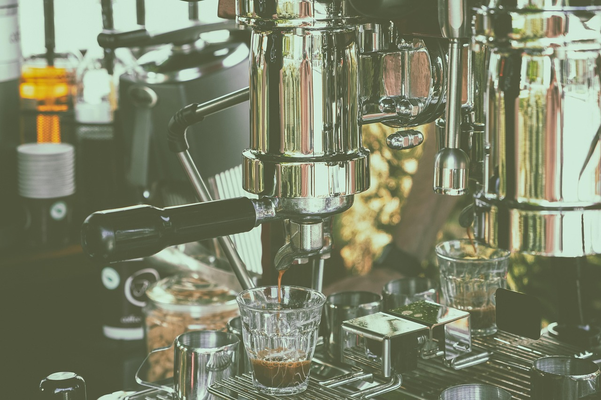

Rapid și simplu
Ia cafeaua fără să aștepți mult.
Cafeaua dimineții, mereu pe fugă
Cafea espresso de luat pe drum, în două locuri centrale din Iași.
7am Coffee To Go este cafeneaua ta de dimineață, mereu la îndemână în Copou și pe strada Sfântul Lazăr.
Te așteptăm cu espresso aromat, perfect pentru începutul zilei. Ideal pentru studenți și cei în drum spre serviciu.

Ia cafeaua fără să aștepți mult.
Ușor de găsit în Copou și pe strada Sfântul Lazăr.
Espresso aromat, proaspăt preparat.

Iași
Iași
Telefon: 0774689270. Locul exact îl vezi pe hartă sau în Google Maps.